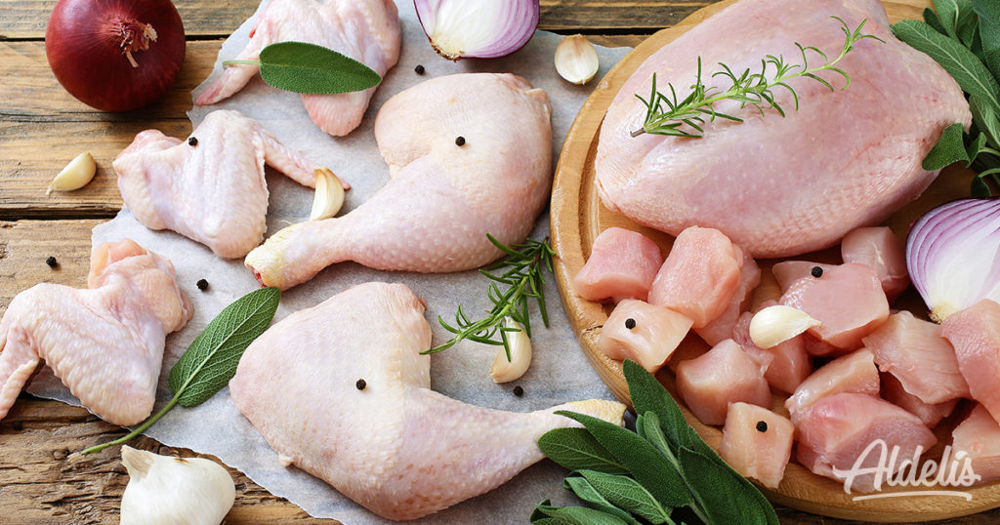
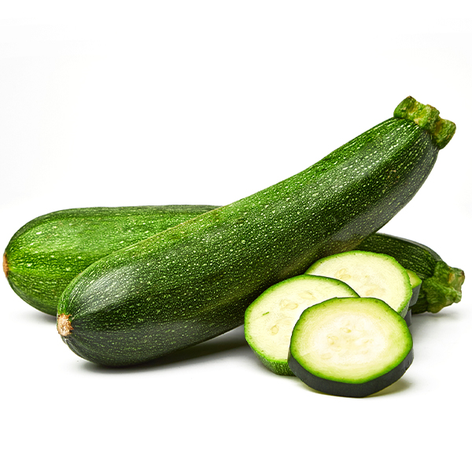
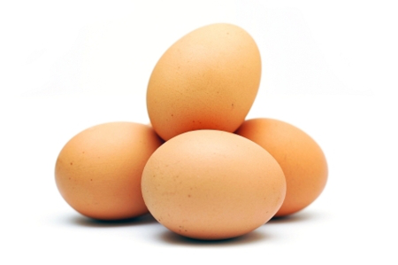
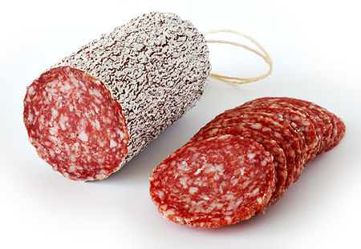

Por cada 100 gramos de garbanzos, son 341 las kcal que nos aportan, con un total de 5,50 gr de grasas,
55 gr de hidratos de carbono, 20,80 gr de proteínas, 15,50 gr de fibra, 25 mg de sodio, 143 mg de calcio,
6,80 mg de hierro, 1000 mg de potasio, 122 mg de magnesio y vitaminas: A, E y C; (33 ug de vitamina A,
4,10 mg de vitamina C y 4,57 mg de vitamina B3, entre otras).

Por cada 100 gramos de pollo, son 120kcal que nos aportan, 3 gr de grasas, 23 gr de proteinas, 45 mg de sodio

Por cada 200 gramos de calabacin, son 34kcal que nos aportan, 1gr de grasa, 6 gr de carbohidratos
2 gr de proteinas

Por 55 gramos de huevo, son 79 kcal que nos aportan, 5gr de grasa, 7 gr de
proteinas

Por 30 gramos de salami, son 101 kcal que nos aportan, 8gr de grasa, 1 gr de carbohidratos,
7gr de proteinas